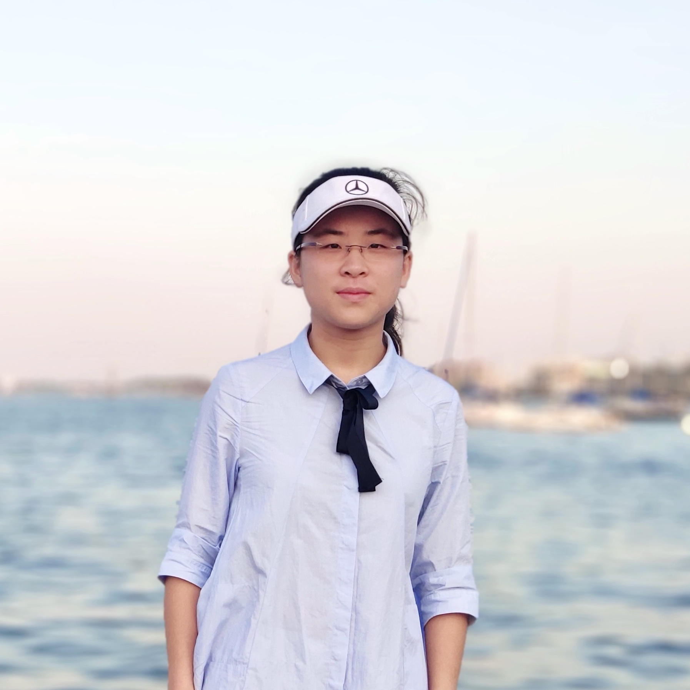
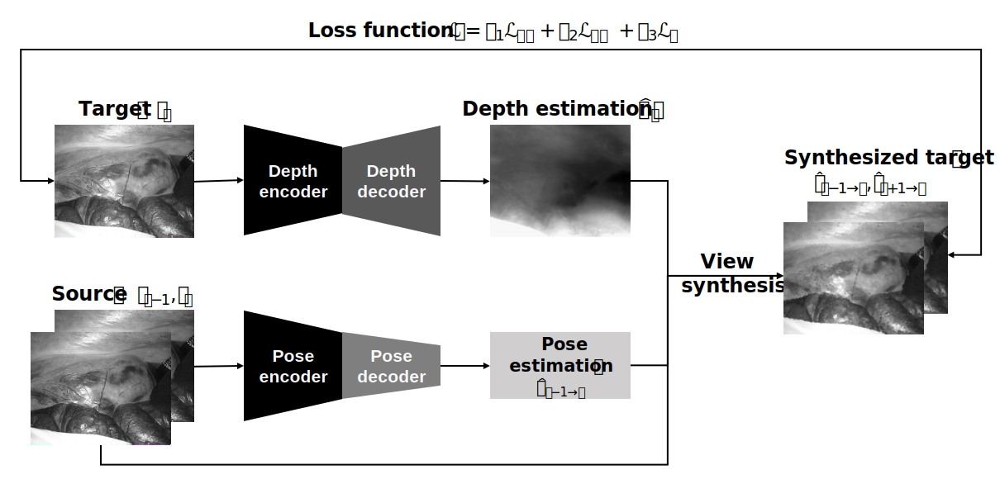
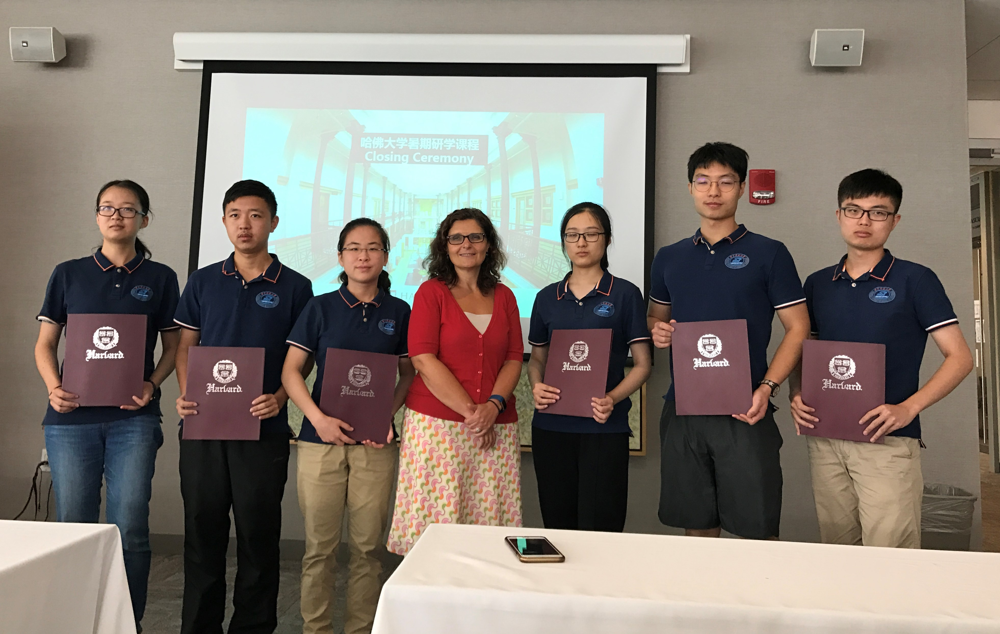
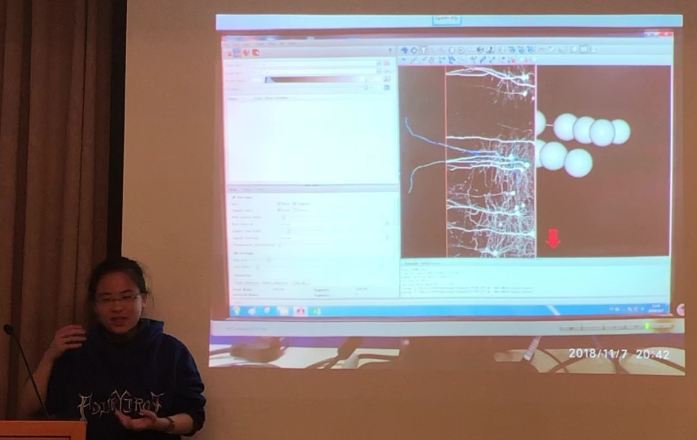
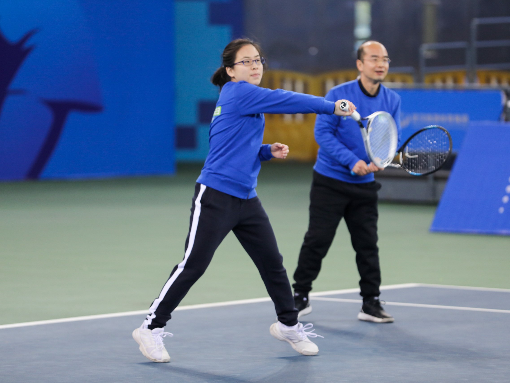

|  | Senior Undergraduate Student |
I am currently a research assistant at Department of Computer Science and Engineering, The Chinese University of Hong Kong (CUHK),
under the supervision of Prof. Qi Dou.
I am also an final year undergraduate majoring in Biomedical Engineering at Huazhong Univerisity of Science and Technology, supervised by Prof. Qiang Li and Prof. Yue Hu.
3D Vision (3D Reconstruction, Rendering)
Deep Learning
Robot-Assisted Surgery
|  | Qiang Li, Yedi Zhang, Hongkuan Shi. “Unsupervised Learning-Based Depth and Ego-Motion Estimation of Monocular Endoscopy”. Chinese Patent (under review). |
Department of Computer Science and Engineering, CUHK Supervisor: Prof. Qi Dou.
Reviewed papers about neural rendering with an emphasis on neural radiance fields.
Wuhan National Laboratory for Optoelectronics, HUST Supervisor: Prof. Qiang Li
Wrote a Chinese patent presenting the proposed method.
Integrated convolutional Long-Short Term Memory (convLSTM) into the pose estimation network to exploit temporal constraints in endoscopic videos.
Implemented Zero-Mean Normalized Cross Correlation (ZNCC) to measure the patch-wise similarities, Peak Signal to Noise Ratio (PSNR) to measure the pixel-wise accuracies to improve the robustness of depth estimations in both texture-rich and texture-less areas.
Proposed and implemented a novel adaptive smoothness loss to cope with specular reflections in endoscopic images.
Generated monocular depth estimation for endoscopic images with open-source repositories (monodepth2 and SfMLearner).
Generated sparse surface reconstruction of endoscopic images with open-source Python/ C Structure-from-Motion pipelines (Colmap, OpenSfM, Bundler, etc).
Reviewed >150 papers about augmented reality in robotic surgery and unsupervised depth estimation methods; summarized and categorized them; wrote a report.
Wuhan National Laboratory for Optoelectronics, HUST
Supervisor: Prof. Yue Hu.
Designed a set of photovoltaic experiments tailored for middle school students based on simplified cutting-edge research experiments.
Developed a website displaying the project: Photovoltaic Web.
Harvard Medical School, Brigham and Women’s Hospital
Jul 2019 - Aug 2019
|  | I attended seminars concerning the application of big data and artificial intelligence in surgery and the US health care system. |
Department of Biomedical Engineering
Jan 2019
|  | I took lectures on microrobots in minimally invasive surgery given by Prof. Li Zhang. |
Champion of 14th IET Present Around the World English Speaking Competition at HUST District Honorable Mention of 2020 Mathematical Contest in Modeling
TOEFL: 103 (Writing: 26, Speaking: 25, Listening: 27, Reading: 25) GRE: 320 (Analytical Writing: 4.0)
Computational Neuroscience
Given by Prof. Peter Latham from Univerisity of College London and Prof. Bin Hu from HUST.
Fundamentals of Machine Learning
Given by Prof. Yi Sun from The City College of New York and Prof. Tingwei Quan from HUST.
Electronic Devices and Circuits (I)(II)
Algorithm Design and Analysis
Computer Systems and Data Structures
Digital Signal Processing
Tennis
|  | Member of HUST tennis team. |
I am a member of HUST tennis team. I was the champion of women's single in 2021 HUST Tennis Tournament and runner-up of women's single in 2019 HUST Tennis Tournament.
Badminton
Member of HUST badminton team.
Fifth place of women's team in 2021 Univeristy Badminton Tournament in Hubei.
Champion of women's single in 2019 HUST Badminton Tournament.
Piano
Rubik's Cube
HUST Student Union
Nutcracker Share (a commonweal sharing platform about overseas study)
{kind=link}
{kind=link}